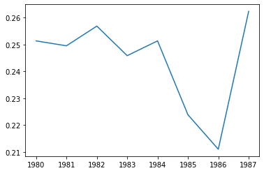

from linearmodels.datasets import wage_panelExercise on panel data
Whose Wages do Union Raise?
Our goal here, is to redo some of the analysis from:
F. Vella and M. Verbeek (1998), “Whose Wages Do Unions Raise? A Dynamic Model of Unionism and Wage Rate Determination for Young Men,” Journal of Applied Econometrics 13, 163-183.
Import the dataset wage_panel from linearmodels.datasets. Describe it and make sure it is in a format suitable for panel data analysis. Show graphically the decrease in unionization over the period.
df = wage_panel.load()df| nr | year | black | exper | hisp | hours | married | educ | union | lwage | expersq | occupation | |
|---|---|---|---|---|---|---|---|---|---|---|---|---|
| 0 | 13 | 1980 | 0 | 1 | 0 | 2672 | 0 | 14 | 0 | 1.197540 | 1 | 9 |
| 1 | 13 | 1981 | 0 | 2 | 0 | 2320 | 0 | 14 | 1 | 1.853060 | 4 | 9 |
| 2 | 13 | 1982 | 0 | 3 | 0 | 2940 | 0 | 14 | 0 | 1.344462 | 9 | 9 |
| 3 | 13 | 1983 | 0 | 4 | 0 | 2960 | 0 | 14 | 0 | 1.433213 | 16 | 9 |
| 4 | 13 | 1984 | 0 | 5 | 0 | 3071 | 0 | 14 | 0 | 1.568125 | 25 | 5 |
| ... | ... | ... | ... | ... | ... | ... | ... | ... | ... | ... | ... | ... |
| 4355 | 12548 | 1983 | 0 | 8 | 0 | 2080 | 1 | 9 | 0 | 1.591879 | 64 | 5 |
| 4356 | 12548 | 1984 | 0 | 9 | 0 | 2080 | 1 | 9 | 1 | 1.212543 | 81 | 5 |
| 4357 | 12548 | 1985 | 0 | 10 | 0 | 2080 | 1 | 9 | 0 | 1.765962 | 100 | 5 |
| 4358 | 12548 | 1986 | 0 | 11 | 0 | 2080 | 1 | 9 | 1 | 1.745894 | 121 | 5 |
| 4359 | 12548 | 1987 | 0 | 12 | 0 | 3380 | 1 | 9 | 1 | 1.466543 | 144 | 5 |
4360 rows × 12 columns
Column nr corresponds to the individual number. Column year corresponds to observation date. We need two set these two columns as a hierarchical index (so that first index corresponds to nr and the second one corresponds to year)
df.set_index(["nr", "year"], inplace=True)
df| black | exper | hisp | hours | married | educ | union | lwage | expersq | occupation | ||
|---|---|---|---|---|---|---|---|---|---|---|---|
| nr | year | ||||||||||
| 13 | 1980 | 0 | 1 | 0 | 2672 | 0 | 14 | 0 | 1.197540 | 1 | 9 |
| 1981 | 0 | 2 | 0 | 2320 | 0 | 14 | 1 | 1.853060 | 4 | 9 | |
| 1982 | 0 | 3 | 0 | 2940 | 0 | 14 | 0 | 1.344462 | 9 | 9 | |
| 1983 | 0 | 4 | 0 | 2960 | 0 | 14 | 0 | 1.433213 | 16 | 9 | |
| 1984 | 0 | 5 | 0 | 3071 | 0 | 14 | 0 | 1.568125 | 25 | 5 | |
| ... | ... | ... | ... | ... | ... | ... | ... | ... | ... | ... | ... |
| 12548 | 1983 | 0 | 8 | 0 | 2080 | 1 | 9 | 0 | 1.591879 | 64 | 5 |
| 1984 | 0 | 9 | 0 | 2080 | 1 | 9 | 1 | 1.212543 | 81 | 5 | |
| 1985 | 0 | 10 | 0 | 2080 | 1 | 9 | 0 | 1.765962 | 100 | 5 | |
| 1986 | 0 | 11 | 0 | 2080 | 1 | 9 | 1 | 1.745894 | 121 | 5 | |
| 1987 | 0 | 12 | 0 | 3380 | 1 | 9 | 1 | 1.466543 | 144 | 5 |
4360 rows × 10 columns
df.describe()| black | exper | hisp | hours | married | educ | union | lwage | expersq | occupation | |
|---|---|---|---|---|---|---|---|---|---|---|
| count | 4360.000000 | 4360.000000 | 4360.000000 | 4360.000000 | 4360.000000 | 4360.000000 | 4360.000000 | 4360.000000 | 4360.000000 | 4360.000000 |
| mean | 0.115596 | 6.514679 | 0.155963 | 2191.257339 | 0.438991 | 11.766972 | 0.244037 | 1.649147 | 50.424771 | 4.988532 |
| std | 0.319777 | 2.825873 | 0.362862 | 566.352301 | 0.496321 | 1.746181 | 0.429564 | 0.532609 | 40.781991 | 2.319978 |
| min | 0.000000 | 0.000000 | 0.000000 | 120.000000 | 0.000000 | 3.000000 | 0.000000 | -3.579079 | 0.000000 | 1.000000 |
| 25% | 0.000000 | 4.000000 | 0.000000 | 2040.000000 | 0.000000 | 11.000000 | 0.000000 | 1.350717 | 16.000000 | 4.000000 |
| 50% | 0.000000 | 6.000000 | 0.000000 | 2080.000000 | 0.000000 | 12.000000 | 0.000000 | 1.671143 | 36.000000 | 5.000000 |
| 75% | 0.000000 | 9.000000 | 0.000000 | 2414.250000 | 1.000000 | 12.000000 | 0.000000 | 1.991086 | 81.000000 | 6.000000 |
| max | 1.000000 | 18.000000 | 1.000000 | 4992.000000 | 1.000000 | 16.000000 | 1.000000 | 4.051860 | 324.000000 | 9.000000 |
# groupby syntax is very convenient here
df.groupby("year")['union'].sum() # number of unionized employeesyear
1980 137
1981 136
1982 140
1983 134
1984 137
1985 122
1986 115
1987 143
Name: union, dtype: int64N = df.groupby("year")['union'].count()union_rate = df.groupby("year")['union'].sum() / N
union_rateyear
1980 0.251376
1981 0.249541
1982 0.256881
1983 0.245872
1984 0.251376
1985 0.223853
1986 0.211009
1987 0.262385
Name: union, dtype: float64Let’s plot decline over time of unionization rate
from matplotlib import pyplot as plt
plt.plot(union_rate.index, union_rate)
Our goal is to estimate the wage premium (if any) associated to belonging to a union.
We first consider a model \(y_{i,t} = \alpha + X_{i,t} \beta + \epsilon_{i,t}\) where \(y_{i,t}\) is the wage and \(X_{i,t}\) contains a vector of regressors which can explain it.
Estimate this model using OLS. What is the effect of union. What is the problem of this regression? Should we use individual or time fixed effects?
import linearmodelsfrom linearmodels import PanelOLS
mod = PanelOLS.from_formula(
"lwage ~ black + hisp + exper + hours + married + educ + union + expersq + occupation",
data=df
)
mod.fit()| Dep. Variable: | lwage | R-squared: | 0.9250 |
|---|---|---|---|
| Estimator: | PanelOLS | R-squared (Between): | 0.9592 |
| No. Observations: | 4360 | R-squared (Within): | 0.1763 |
| Date: | Tue, Mar 15 2022 | R-squared (Overall): | 0.9250 |
| Time: | 11:45:22 | Log-likelihood | -2938.0 |
| Cov. Estimator: | Unadjusted | ||
| F-statistic: | 5960.1 | ||
| Entities: | 545 | P-value | 0.0000 |
| Avg Obs: | 8.0000 | Distribution: | F(9,4351) |
| Min Obs: | 8.0000 | ||
| Max Obs: | 8.0000 | F-statistic (robust): | 5960.1 |
| P-value | 0.0000 | ||
| Time periods: | 8 | Distribution: | F(9,4351) |
| Avg Obs: | 545.00 | ||
| Min Obs: | 545.00 | ||
| Max Obs: | 545.00 | ||
| Parameter | Std. Err. | T-stat | P-value | Lower CI | Upper CI | |
|---|---|---|---|---|---|---|
| black | -0.1195 | 0.0234 | -5.1075 | 0.0000 | -0.1653 | -0.0736 |
| hisp | 0.0483 | 0.0204 | 2.3700 | 0.0178 | 0.0083 | 0.0882 |
| exper | 0.1097 | 0.0097 | 11.305 | 0.0000 | 0.0906 | 0.1287 |
| hours | -5.894e-05 | 1.28e-05 | -4.6029 | 0.0000 | -8.404e-05 | -3.384e-05 |
| married | 0.1066 | 0.0156 | 6.8501 | 0.0000 | 0.0761 | 0.1371 |
| educ | 0.1093 | 0.0028 | 38.939 | 0.0000 | 0.1038 | 0.1149 |
| union | 0.2017 | 0.0172 | 11.714 | 0.0000 | 0.1680 | 0.2355 |
| expersq | -0.0038 | 0.0007 | -5.4359 | 0.0000 | -0.0051 | -0.0024 |
| occupation | -0.0253 | 0.0029 | -8.5924 | 0.0000 | -0.0311 | -0.0196 |
id: 0x7f6b2d76f040
The regression is significant: R2 is significantly different from zero (p-value< 1e-5). All coefficients are significant at the 5% level, including the coefficient in front of lwage (log of wages).
According to this coefficient, belonging to a union in a given year, includes salary by 20% approximately. (log(1+0.2)~18%)
Formulate a model with individual fixed effect. Run a panel regression. Comment the results.
In this regression, non-observed heterogeneity between individuals, might explain difference in wage levels, and lead to systematic biases in the estimated coefficient. To control for it, we can add individual fixed effects.
from linearmodels import PanelOLS
mod = PanelOLS.from_formula(
"lwage ~ black + hisp + exper + hours + married + educ + union + expersq + occupation + EntityEffects",
data=df)
print(mod.fit())AbsorbingEffectError:
The model cannot be estimated. The included effects have fully absorbed
one or more of the variables. This occurs when one or more of the dependent
variable is perfectly explained using the effects included in the model.
The following variables or variable combinations have been fully absorbed
or have become perfectly collinear after effects are removed:
black
hisp
married, educ
Set drop_absorbed=True to automatically drop absorbed variables.We observe that the fixed effects are “absorbing” some indicator variables (black, hisp, married, educ). For conistency, we have to remove them from the regression.
mod = PanelOLS.from_formula("lwage ~ black + hisp + exper + hours + married + educ + union + expersq + occupation + EntityEffects", data=df, drop_absorbed=True)mod.fit()/home/pablo/.local/opt/miniconda/lib/python3.8/site-packages/linearmodels/panel/model.py:1743: AbsorbingEffectWarning:
Variables have been fully absorbed and have removed from the regression:
black, hisp, educ
warnings.warn(| Dep. Variable: | lwage | R-squared: | 0.2005 |
|---|---|---|---|
| Estimator: | PanelOLS | R-squared (Between): | 0.3244 |
| No. Observations: | 4360 | R-squared (Within): | 0.2005 |
| Date: | Tue, Mar 15 2022 | R-squared (Overall): | 0.3190 |
| Time: | 11:52:33 | Log-likelihood | -1271.2 |
| Cov. Estimator: | Unadjusted | ||
| F-statistic: | 159.19 | ||
| Entities: | 545 | P-value | 0.0000 |
| Avg Obs: | 8.0000 | Distribution: | F(6,3809) |
| Min Obs: | 8.0000 | ||
| Max Obs: | 8.0000 | F-statistic (robust): | 159.19 |
| P-value | 0.0000 | ||
| Time periods: | 8 | Distribution: | F(6,3809) |
| Avg Obs: | 545.00 | ||
| Min Obs: | 545.00 | ||
| Max Obs: | 545.00 | ||
| Parameter | Std. Err. | T-stat | P-value | Lower CI | Upper CI | |
|---|---|---|---|---|---|---|
| exper | 0.1349 | 0.0086 | 15.710 | 0.0000 | 0.1181 | 0.1518 |
| hours | -0.0001 | 1.342e-05 | -10.273 | 0.0000 | -0.0002 | -0.0001 |
| married | 0.0457 | 0.0181 | 2.5276 | 0.0115 | 0.0102 | 0.0811 |
| union | 0.0786 | 0.0191 | 4.1134 | 0.0000 | 0.0411 | 0.1160 |
| expersq | -0.0052 | 0.0006 | -8.5424 | 0.0000 | -0.0064 | -0.0040 |
| occupation | -0.0080 | 0.0035 | -2.2798 | 0.0227 | -0.0149 | -0.0011 |
F-test for Poolability: 9.1024
P-value: 0.0000
Distribution: F(544,3809)
Included effects: Entity
id: 0x7f6b29688c70
We observe that the variables in this regression have a worse predictive power than the former one. This is not a surprise: we have replaced many observed characteristics by fixed effect that are fitted to every single individual. For predictions there is no way to guess the fixed effect, which is why the R2 is low. Note that the effect of belonging to a union, is reduced by half (8% increase in salary explained by unionization), which points to an important effect of unobserved heterogeneity.
Formulate a model with individual and time fixed effect. Run a panel regression. Comment the results.
In the same spirit, the time trend, is not accounted for in the regression, which might explain some of the results. Let’s add time fixed effects.
mod = PanelOLS.from_formula(
"lwage ~ black + hisp + exper + hours + married + educ + union + expersq + occupation \
+ EntityEffects + TimeEffects", data=df, drop_absorbed=True)mod.fit()/home/pablo/.local/opt/miniconda/lib/python3.8/site-packages/linearmodels/panel/model.py:1743: AbsorbingEffectWarning:
Variables have been fully absorbed and have removed from the regression:
black, hisp, exper, educ
warnings.warn(| Dep. Variable: | lwage | R-squared: | 0.0487 |
|---|---|---|---|
| Estimator: | PanelOLS | R-squared (Between): | -0.8389 |
| No. Observations: | 4360 | R-squared (Within): | -0.6698 |
| Date: | Tue, Mar 15 2022 | R-squared (Overall): | -0.8315 |
| Time: | 11:55:45 | Log-likelihood | -1263.6 |
| Cov. Estimator: | Unadjusted | ||
| F-statistic: | 38.919 | ||
| Entities: | 545 | P-value | 0.0000 |
| Avg Obs: | 8.0000 | Distribution: | F(5,3803) |
| Min Obs: | 8.0000 | ||
| Max Obs: | 8.0000 | F-statistic (robust): | 38.919 |
| P-value | 0.0000 | ||
| Time periods: | 8 | Distribution: | F(5,3803) |
| Avg Obs: | 545.00 | ||
| Min Obs: | 545.00 | ||
| Max Obs: | 545.00 | ||
| Parameter | Std. Err. | T-stat | P-value | Lower CI | Upper CI | |
|---|---|---|---|---|---|---|
| hours | -0.0001 | 1.342e-05 | -10.351 | 0.0000 | -0.0002 | -0.0001 |
| married | 0.0470 | 0.0181 | 2.6047 | 0.0092 | 0.0116 | 0.0825 |
| union | 0.0762 | 0.0191 | 3.9822 | 0.0001 | 0.0387 | 0.1136 |
| expersq | -0.0061 | 0.0007 | -8.7238 | 0.0000 | -0.0075 | -0.0048 |
| occupation | -0.0078 | 0.0035 | -2.2274 | 0.0260 | -0.0147 | -0.0009 |
F-test for Poolability: 9.4090
P-value: 0.0000
Distribution: F(551,3803)
Included effects: Entity, Time
id: 0x7f6b29619790
Here the addition of time fixed effects, reduces the explanatory power a bit further, but does not change much the estimate for the effect of unionization (still around 8%).